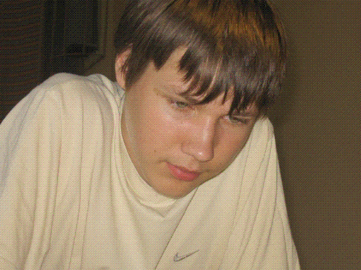

世锦赛吴镝憾负帕克
#1 世锦赛吴镝憾负帕克 作者：有志青年 发表时间：2007-8-10 8:15:34

顶替安度参赛的安德烈·帕克六段
在刚刚进行完毕的第十届连珠世锦赛A组第二轮比赛中，刚尝胜果的吴镝五段负于爱沙尼亚的安德烈·帕克六段。本局由吴镝开局，交换后执白，黑33手吴投子认负。安德烈·帕克 ，现今世界排名第58位。由于上届冠军安度的缺席，安德烈·帕克是以爱沙尼亚资格赛第四名的身份替补进入的A组决赛。
在看过第一时间上传的棋谱后，殷立成七段认为由于是第一次参加这样高级别的比赛，吴镝输在了比赛经验上，在有积分的情况下，没有必要开强局冒险。
北京著名棋手曹冬则认为吴镝的算路应该不比安德瑞·帕克差，可能是过于依赖和相信研究，在计算上忽略了仔细和深远。曹冬说：“有时在研究上有了充分准备，实战还要仔细计算一下，也许还能发现更好的点 。”一直关注此次比赛进展的上海老将葛凌锋对此也和曹冬有同感。
由于此次比赛官网更新速度很慢，再加上国内和参赛棋手联络不畅，到目前为止，还没有A组其它比赛结果以及参加B组比赛的另一位中国棋手仇云飞的消息。
世界连珠锦标赛由国际连珠联盟举办，每两年一届。目前为止，已举办了十届。此次比赛在俄罗斯著名的“石油之都”秋明市举行，参加A组比赛的12名棋手分别来自俄罗斯、爱沙尼亚、日本、瑞典、中国等连珠强国，比赛为11轮单循环赛制。此次锦标赛全部比赛将于8月15日结束。（叶子）